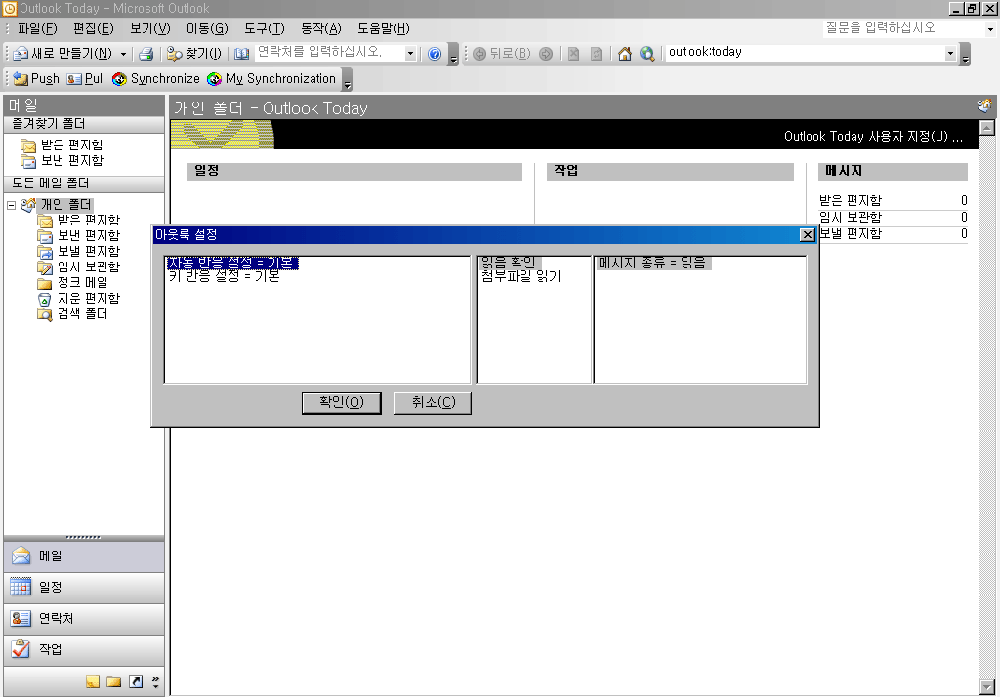

자동 반응 설정에서 지원하는 아웃룩 이벤트는 다음과 같습니다.

1. 항목 목록 포커스
<F6>, <Tab>, <Shift-Tab> 등의 키를 사용하여 현재 폴더의 항목이 나타나는 목록에 포커스될 때 발생합니다.
2. 메일 항목 포커스 변경
메일 목록에서 화살표를 사용해 항목 포커스가 변경된 경우 발생합니다.
3. 연락처 항목 포커스 변경
연락처 목록에서 화살표를 사용해 항목 포커스가 변경된 경우 발생합니다.
4. 작업 항목 포커스 변경
작업 목록에서 화살표를 사용해 항목 포커스가 변경된 경우 발생합니다.
5. 메모 항목 포커스 변경
메모 목록에서 화살표를 사용해 항목 포커스가 변경된 경우 발생합니다.
센스리더는 아웃룩에 대해 다음의 기능들을 지원합니다. 여기에 나열된 기능들은 자동 반응 설정이나 키 반응 설정에서 연결 기능으로 지정되어야 실제 동작을 하게 됩니다. 세부 동작과 추가 기능을 실행하기 위해 옵션과 팝업 메뉴를 가진 기능들이 정의되어 있음으로 주의하도록 합니다.
[] 현재 폴더 이름 읽기
현재 폴더의 이름을 읽어줍니다.
[] 목록 종류 읽기
목록에 나타난 항목의 종류를 읽어줍니다.
[] 총 항목 수 읽기
목록에 나타난 항목의 총 수를 읽어줍니다.
[] 현재 항목 제목 읽기
현재 항목 제목을 읽어줍니다.
[] 보낸사람 읽기
현재 항목의 보낸사람을 읽어줍니다.
[] 받는사람 읽기
현재 항목의 받는사람을 읽어줍니다.
[] 참조 읽기
참조를 읽어줍니다.
[] 읽음 확인
현재 항목의 읽음 여부를 알려줍니다.
-- 세부 옵션 --
1) 메시지 종류: '읽음' 항목을 알려줄지, '안읽음' 항목을 알려줄지 여부를 선택합니다.
[] 첨부파일 읽기
첨부파일이 있는 경우 첨부 수, 첨부파일명 등을 읽어줍니다.
-- 세부 옵션 --
1) 파일명 읽기: 파일명을 포함하여 읽을지 여부를 선택합니다.
[] 중요도 읽기
중요도 수준을 '낮음', '보통', '높음'으로 읽어줍니다.
[] 연락처 이름 읽기
현재 폴더가 '연락처'인 경우 항목의 이름을 읽어줍니다.